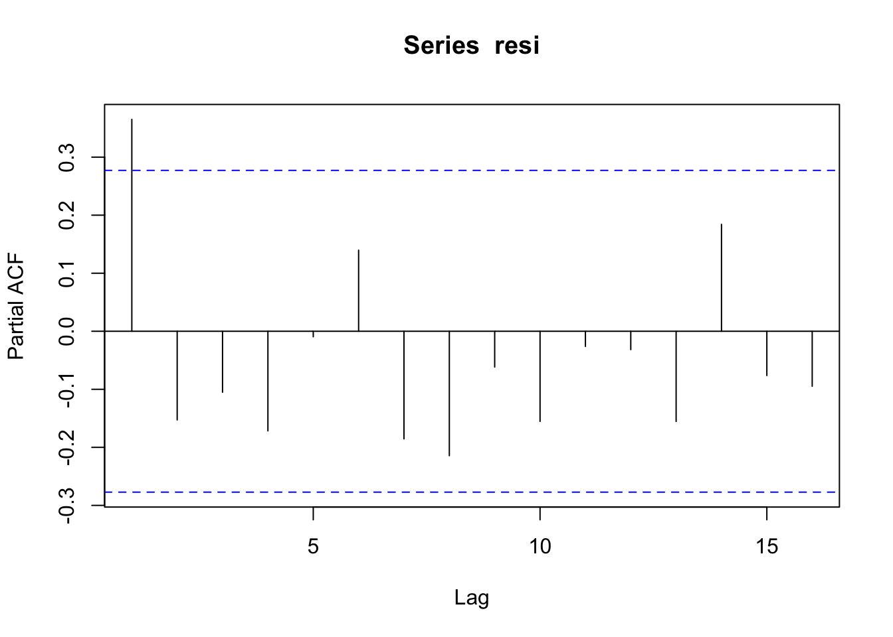

Assuming \(y_t\) can be written as a linear function of \(x\) and the error term \(e\) has aurocorrelation \[y_t = 1.2 + 2.2 x_{1,t} + 2.3 x_{2,t} + e_t \] \[ e_t = \rho e_{t-1} + w_t ,\, where\, w \sim N(0,\sigma^2)\] To simulate \(y\) we do:
library(MASS)
library(matrixStats)
m=30
x <- mvrnorm(n=m,mu=c(0.05,0.08),
Sigma=matrix(c(0.0004,0.00023,0.00023,0.0006),
nrow=2,ncol=2,byrow=TRUE))
## assuming correlation in x
et <- arima.sim(list(order = c(1,0,0),ar=0.6),n=m,rand.gen=rnorm,sd=0.1)
yt <- 1.2 + x %*% c(2.2,2.3)+etThen we do regress \(y\) on \(x\) using OLS:
regressY <- lm(yt~x)
summary(regressY)##
## Call:
## lm(formula = yt ~ x)
##
## Residuals:
## Min 1Q Median 3Q Max
## -0.168331 -0.042144 -0.009908 0.068907 0.141394
##
## Coefficients:
## Estimate Std. Error t value Pr(>|t|)
## (Intercept) 1.13217 0.04554 24.859 <2e-16 ***
## x1 3.20209 0.92466 3.463 0.0018 **
## x2 1.79299 0.68483 2.618 0.0143 *
## ---
## Signif. codes: 0 '***' 0.001 '**' 0.01 '*' 0.05 '.' 0.1 ' ' 1
##
## Residual standard error: 0.08294 on 27 degrees of freedom
## Multiple R-squared: 0.6597, Adjusted R-squared: 0.6345
## F-statistic: 26.17 on 2 and 27 DF, p-value: 4.782e-07regressY$coefficients## (Intercept) x1 x2
## 1.132170 3.202087 1.792995Test the autocorrelation of residuals
resi <- regressY$residuals
pacf(resi)
ar.ols(resi)##
## Call:
## ar.ols(x = resi)
##
## Coefficients:
## 1 2 3 4 5 6 7 8
## -0.8249 -0.0756 0.1893 -0.5216 0.3255 -0.4818 0.8980 -0.4992
## 9 10 11 12 13 14
## -0.5066 -0.4612 0.0382 0.0729 0.9104 -0.8450
##
## Intercept: 0.01136 (0.006316)
##
## Order selected 14 sigma^2 estimated as 0.0001309Do GLS
\[y_t - \rho y_{t-1} = \alpha (1-\rho) + \beta_1(x_{1,t} - \rho x_{1,t-1}) + \beta_2 (x_{2,t} - \rho x_{2,t-1}) + w\]
## regress on resi hat
regressE <- lm(resi[2:length(resi)]~resi[1:(length(resi)-1)]-1)
rho <- regressE$coefficients[1]
## GLS
## yt - rho * yt_1 = alpha * (1-rho) + beta1*(x1_t - rho * x1_t-1) + beta *
## (x2_t - rho * x2_t-1)
yt2 <- yt[2:length(yt)]
xt2 <- x[2:nrow(x),]
xprime <- (xt2- c(rho,rho) * x[1:(nrow(x)-1),])
regressY_GLS <- lm( (yt2-rho*yt[1:(length(yt)-1)]) ~ xprime)
summary(regressY_GLS)##
## Call:
## lm(formula = (yt2 - rho * yt[1:(length(yt) - 1)]) ~ xprime)
##
## Residuals:
## Min 1Q Median 3Q Max
## -0.161980 -0.032130 -0.006371 0.051233 0.168447
##
## Coefficients:
## Estimate Std. Error t value Pr(>|t|)
## (Intercept) 0.87518 0.03602 24.295 < 2e-16 ***
## xprime1 2.49002 0.92270 2.699 0.01207 *
## xprime2 2.13367 0.63338 3.369 0.00236 **
## ---
## Signif. codes: 0 '***' 0.001 '**' 0.01 '*' 0.05 '.' 0.1 ' ' 1
##
## Residual standard error: 0.08028 on 26 degrees of freedom
## Multiple R-squared: 0.6401, Adjusted R-squared: 0.6124
## F-statistic: 23.12 on 2 and 26 DF, p-value: 1.702e-06alpha <- regressY_GLS$coefficients[1]/(1-rho)
alpha## (Intercept)
## 1.137018We redo the above steps for n times:
n=2000
OLS_coefs <- matrix(nrow=n,ncol=3)
GLS_coefs <- matrix(nrow=n,ncol=3)
for(i in 1:n) {
x <- mvrnorm(n=m,mu=c(0.05,0.08),
Sigma=matrix(c(0.0004,0.00023,0.00023,0.0006),
nrow=2,ncol=2,byrow=TRUE))
## assuming autocorrelation in x
et <- arima.sim(list(order = c(1,0,0),ar=0.6),n=m,rand.gen=rnorm,sd=0.1)
yt <- 1.2 + x %*% c(2.2,2.3)+et
regressY <- lm(yt~x)
#summary(regressY)
OLS_coefs[i,] <- regressY$coefficients
## GLS
resi <- regressY$residuals
regressE <- lm(resi[2:length(resi)]~resi[1:(length(resi)-1)])
rho <- regressE$coefficients[2]
## GLS
## yt - rho * yt_1 = alpha * (1-rho) + beta1*(x1_t - rho * x1_t-1) + beta *
## (x2_t - rho * x2_t-1)
# yt2 <- yt[2:length(yt)]
# xt2 <- x[2:nrow(x),]
# xprime <- (xt2- c(rho,rho) * x[1:(nrow(x)-1),])
# regressY_GLS <- lm( (yt2-rho*yt[1:(length(yt)-1)]) ~ xprime)
# alpha <- regressY_GLS$coefficients[1]/(1-rho)
# GLS_coefs[i,1] <- alpha
# GLS_coefs[i,2:3] <- regressY_GLS$coefficients[2:3]
GLS_coefs[i,] <- CochraneOrcuttIteration(yt,x,0.001)
}
colMeans(OLS_coefs)## [1] 1.202437 2.156343 2.288972colMeans(GLS_coefs)## [1] 1.198569 2.207025 2.301260The variance of sampling distribution of GLS is much smaller than that of OLS, and is therefore more effieicnt.
colVars(OLS_coefs)## [1] 0.008114863 1.769628798 1.193183102colVars(GLS_coefs)## [1] 0.005881866 1.015788454 0.693408818